Sistema híbrido resistente a cargas laterales [LH]
Se presentan sistemas híbridos resistentes a cargas laterales (LLRS) en los siguientes casos: a) Hay más de un LLRS en el edificio, pero no es clara la distinción entre los LLRSs en las dos direcciones principales (X y Y), o b) Hay un solo LLRS en el edificio, pero dos o más materiales del LLRS son usados en diferentes porciones del edificio. Note que el sistema dual pórtico-muros System es también un sistema híbrido, sin embargo, ha sido clasificado como un LLRS separados en la taxonomía . Cabe también señalar que la dirección está destinada a ser utilizado para describir edificios con dos LLRSs distintos en direcciones principales del edificio , que también son sistemas híbridos.
Diferentes LLRSs podrían existir hasta la altura del edificio , o podría haber más de un sistema en cada dirección principal del edificio. Por ejemplo , existem pórticos de concreto reforzado en la parte inferior del edificio de una o dos plantas y muros de mampostería en los pisos superiores.
Un ejemplo de un LLRS híbridos donde se utilizan dos materiales diferentes es el sistema de muros, donde existe muros de carga en la parte inferior de una o dos plantas apoyo a un sistema de carga de madera resistente al lateral (también clasificado como Muro).

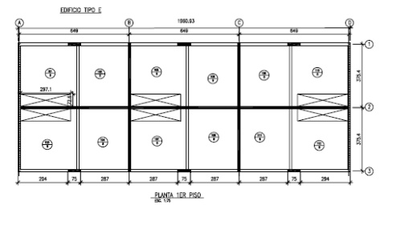
Un ejemplo de un sistema híbrido de Chile , donde existen columnas de hormigón armado en la dirección longitudinal ( baylines 1 y 3) en los dos niveles más bajos del piso , y no se refuerzan las paredes de mampostería en los niveles superiores ( como se muestra en la planta de arriba). Existen muros de hormigón armado a lo largo del vano 2 a nivel de la planta baja , y no se refuerzan las paredes de mampostería en los niveles superiores. Paredes en dirección transversal ( Vanos A y C ) son de mampostería reforzada en todos los niveles de piso. Las paredes a lo largo de Bayline B son de construcción de concreto reforzado a nivel de la planta baja , y la construcción de mampostería reforzada en los niveles superiores (M.O. Moroni Yadlin).
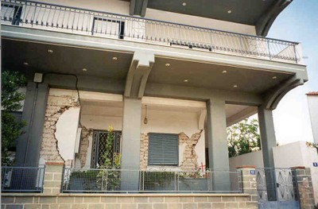
Un viejo edificio de mampostería portante de ladrillo en la planta baja se ha superpuesto por la nueva construcción del marco de hormigón armado más arriba; el daño a la parte de albañilería ocurrió durante el terremoto de Atenas del 07 de septiembre 1999 ; extensiones del marco de hormigón armado (en plan, o la elevación , o ambos) a los edificios de mampostería de edad son frecuentes en Grecia donde constituyen alrededor del 5% de los edificios existentes” (A. Pomonis)
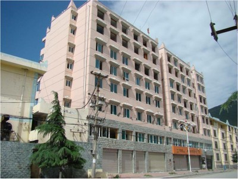
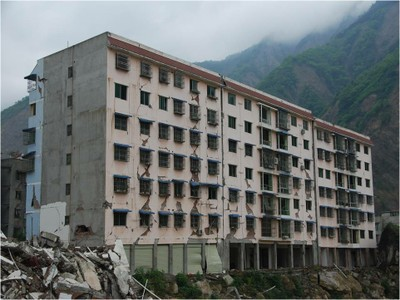
Edificios con estructura de hormigón armado utilizado en el primer piso y mampostería confinada encima se pueden encontrar en China; algunos edificios de este tipo se vieron afectados por el terremoto de Wenchuan 2008 (J. Dai)

edificios con estructura de hormigón armado fundido in situ con yeso en la planta baja y mampostería de ladrillo o de hormigón paredes en las superiores se pueden encontrar en Kirguistán (K. Kanbolotov)

Collapso del sexto piso del edificio de 8 plantas Kobe City Hall Annex edificio en el terremoto de Kobe , Japón 1995 . El colapso se debió probablemente a un sistema híbrido de resistencia a cargas laterales que consiste en
acero de hormigón armado ( SRC ) en los pisos inferiores y pórticos de RC en los pisos superiores (C. Scawthorn).
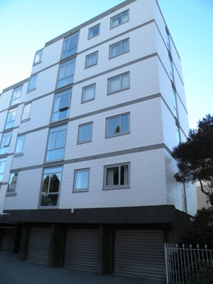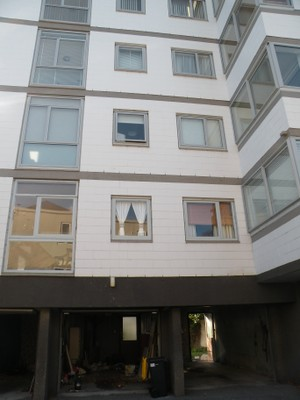
Un edificio de seis plantas dañadas en el Christchurch, Nueva Zelanda terremoto febrero 2011 ha paredes de hormigón armado en la planta baja y la construcción de mampostería reforzada por encima ( en la forma de interior reforzado paredes de bloques de hormigón en las paredes interiores de la cavidad y en el exterior) (J. Centeno)

Un sistema híbrido que consiste en la construcción de estructura de hormigón colado in situ reforzada a nivel de planta baja y una estructura de madera anterior se puede encontrar en California ( EE.UU. ) y la Columbia Británica (Canadá )(Canada)(Canadá ) (D. Bonowitz)

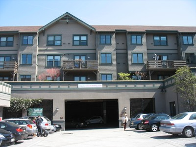
Marcos de hormigón armado en el nivel de planta baja y de estructura de madera apartamentos encima - planta baja por lo general utilizan para el estacionamiento , California (D. Bonowitz).Un edificio con estructura de hormigón armado prefabricado en el marco de la planta baja y madera encima se derrumbó en el terremoto de Northridge , California 1994 ( la estructura de hormigón del edificio se derrumbó y perdió planta baja) (FEMA 454)

Un edificio con la planta baja consta de piedra y mampostería no reforzada de ladrillo de construcción , y la segunda planta con la construcción Dhajji Dewari , Cachemira , Indiadia (D. Rai)


Un edificio con un sistema de carga -resistencia lateral híbrido que consiste en la construcción de mampostería confinada en la primera construcción de plantas y madera en el segundo piso , Constitución, Chile (S. Brzev)
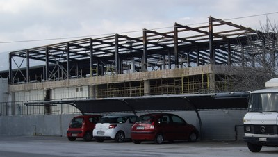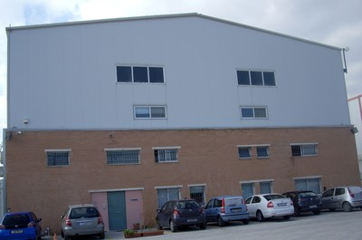
Un ejemplo de un sistema híbrido con estructura de hormigón armado en el marco de la planta baja y el acero por encima , Atenas , Grecia ( la foto de la izquierda muestra un edificio en construcción y la foto de la derecha muestra un edificio similar cuando completó ) (A. Pomonis)
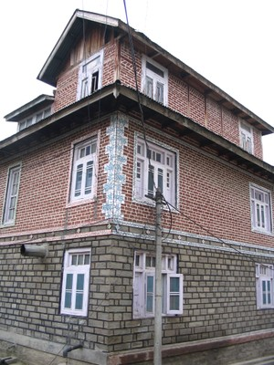
Un edificio híbrido con muro de mampostería de piedra en la planta baja, muro de mampostería de ladrillo en el segundo piso , y la construcción Dhajji Dewari (nota postes de madera ) a nivel de piso , Cachemira , India (D. Rai)
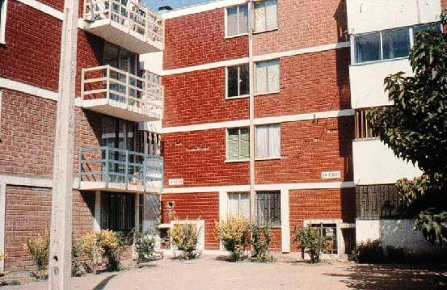
Un sistema híbrido que consta de albañilería confinada en la planta baja y reforzado arcilla bloques de mampostería arriba; esta foto muestra un edificio en Chile, que sufrió daños en el segundo piso en el terremoto de 1985 Llolleo (M. Astroza)